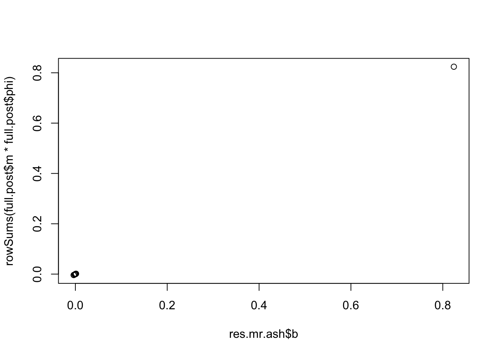
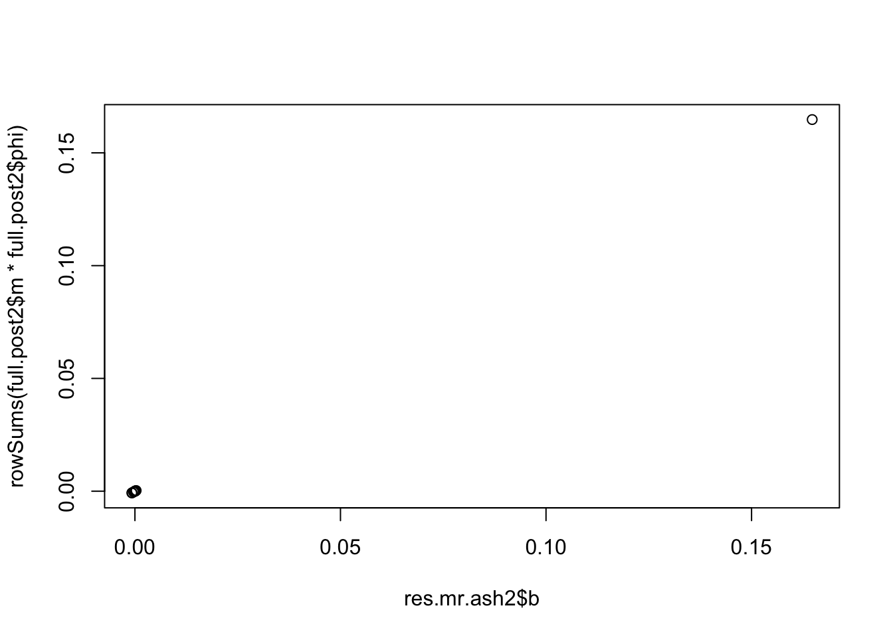

Last updated: 2023-10-27
Checks: 7 0
Knit directory: misc/analysis/
This reproducible R Markdown analysis was created with workflowr (version 1.7.0). The Checks tab describes the reproducibility checks that were applied when the results were created. The Past versions tab lists the development history.
Great! Since the R Markdown file has been committed to the Git repository, you know the exact version of the code that produced these results.
Great job! The global environment was empty. Objects defined in the global environment can affect the analysis in your R Markdown file in unknown ways. For reproduciblity it’s best to always run the code in an empty environment.
The command set.seed(1) was run prior to running the
code in the R Markdown file. Setting a seed ensures that any results
that rely on randomness, e.g. subsampling or permutations, are
reproducible.
Great job! Recording the operating system, R version, and package versions is critical for reproducibility.
Nice! There were no cached chunks for this analysis, so you can be confident that you successfully produced the results during this run.
Great job! Using relative paths to the files within your workflowr project makes it easier to run your code on other machines.
Great! You are using Git for version control. Tracking code development and connecting the code version to the results is critical for reproducibility.
The results in this page were generated with repository version a6608e4. See the Past versions tab to see a history of the changes made to the R Markdown and HTML files.
Note that you need to be careful to ensure that all relevant files for
the analysis have been committed to Git prior to generating the results
(you can use wflow_publish or
wflow_git_commit). workflowr only checks the R Markdown
file, but you know if there are other scripts or data files that it
depends on. Below is the status of the Git repository when the results
were generated:
Ignored files:
Ignored: .DS_Store
Ignored: .Rhistory
Ignored: .Rproj.user/
Ignored: analysis/.RData
Ignored: analysis/.Rhistory
Ignored: analysis/ALStruct_cache/
Ignored: data/.Rhistory
Ignored: data/methylation-data-for-matthew.rds
Ignored: data/pbmc/
Untracked files:
Untracked: .dropbox
Untracked: Icon
Untracked: analysis/GHstan.Rmd
Untracked: analysis/GTEX-cogaps.Rmd
Untracked: analysis/PACS.Rmd
Untracked: analysis/Rplot.png
Untracked: analysis/SPCAvRP.rmd
Untracked: analysis/admm_02.Rmd
Untracked: analysis/admm_03.Rmd
Untracked: analysis/cholesky.Rmd
Untracked: analysis/compare-transformed-models.Rmd
Untracked: analysis/cormotif.Rmd
Untracked: analysis/cp_ash.Rmd
Untracked: analysis/eQTL.perm.rand.pdf
Untracked: analysis/eb_prepilot.Rmd
Untracked: analysis/eb_var.Rmd
Untracked: analysis/ebpmf1.Rmd
Untracked: analysis/ebpmf_sla_text.Rmd
Untracked: analysis/ebspca_sims.Rmd
Untracked: analysis/explore_psvd.Rmd
Untracked: analysis/fa_check_identify.Rmd
Untracked: analysis/fa_iterative.Rmd
Untracked: analysis/flash_test_tree.Rmd
Untracked: analysis/flash_tree.Rmd
Untracked: analysis/flashier_newgroups.Rmd
Untracked: analysis/greedy_ebpmf_exploration_00.Rmd
Untracked: analysis/ieQTL.perm.rand.pdf
Untracked: analysis/lasso_em_03.Rmd
Untracked: analysis/m6amash.Rmd
Untracked: analysis/mash_bhat_z.Rmd
Untracked: analysis/mash_ieqtl_permutations.Rmd
Untracked: analysis/methylation_example.Rmd
Untracked: analysis/mixsqp.Rmd
Untracked: analysis/mr.ash_lasso_init.Rmd
Untracked: analysis/mr.mash.test.Rmd
Untracked: analysis/mr_ash_modular.Rmd
Untracked: analysis/mr_ash_parameterization.Rmd
Untracked: analysis/mr_ash_ridge.Rmd
Untracked: analysis/mv_gaussian_message_passing.Rmd
Untracked: analysis/nejm.Rmd
Untracked: analysis/nmf_bg.Rmd
Untracked: analysis/normal_conditional_on_r2.Rmd
Untracked: analysis/normalize.Rmd
Untracked: analysis/pbmc.Rmd
Untracked: analysis/pca_binary_weighted.Rmd
Untracked: analysis/pca_l1.Rmd
Untracked: analysis/poisson_nmf_approx.Rmd
Untracked: analysis/poisson_shrink.Rmd
Untracked: analysis/poisson_transform.Rmd
Untracked: analysis/pseudodata.Rmd
Untracked: analysis/qrnotes.txt
Untracked: analysis/ridge_iterative_02.Rmd
Untracked: analysis/ridge_iterative_splitting.Rmd
Untracked: analysis/samps/
Untracked: analysis/sc_bimodal.Rmd
Untracked: analysis/shrinkage_comparisons_changepoints.Rmd
Untracked: analysis/susie_en.Rmd
Untracked: analysis/susie_z_investigate.Rmd
Untracked: analysis/svd-timing.Rmd
Untracked: analysis/temp.RDS
Untracked: analysis/temp.Rmd
Untracked: analysis/test-figure/
Untracked: analysis/test.Rmd
Untracked: analysis/test.Rpres
Untracked: analysis/test.md
Untracked: analysis/test_qr.R
Untracked: analysis/test_sparse.Rmd
Untracked: analysis/tree_dist_top_eigenvector.Rmd
Untracked: analysis/z.txt
Untracked: code/multivariate_testfuncs.R
Untracked: code/rqb.hacked.R
Untracked: data/4matthew/
Untracked: data/4matthew2/
Untracked: data/E-MTAB-2805.processed.1/
Untracked: data/ENSG00000156738.Sim_Y2.RDS
Untracked: data/GDS5363_full.soft.gz
Untracked: data/GSE41265_allGenesTPM.txt
Untracked: data/Muscle_Skeletal.ACTN3.pm1Mb.RDS
Untracked: data/Thyroid.FMO2.pm1Mb.RDS
Untracked: data/bmass.HaemgenRBC2016.MAF01.Vs2.MergedDataSources.200kRanSubset.ChrBPMAFMarkerZScores.vs1.txt.gz
Untracked: data/bmass.HaemgenRBC2016.Vs2.NewSNPs.ZScores.hclust.vs1.txt
Untracked: data/bmass.HaemgenRBC2016.Vs2.PreviousSNPs.ZScores.hclust.vs1.txt
Untracked: data/eb_prepilot/
Untracked: data/finemap_data/fmo2.sim/b.txt
Untracked: data/finemap_data/fmo2.sim/dap_out.txt
Untracked: data/finemap_data/fmo2.sim/dap_out2.txt
Untracked: data/finemap_data/fmo2.sim/dap_out2_snp.txt
Untracked: data/finemap_data/fmo2.sim/dap_out_snp.txt
Untracked: data/finemap_data/fmo2.sim/data
Untracked: data/finemap_data/fmo2.sim/fmo2.sim.config
Untracked: data/finemap_data/fmo2.sim/fmo2.sim.k
Untracked: data/finemap_data/fmo2.sim/fmo2.sim.k4.config
Untracked: data/finemap_data/fmo2.sim/fmo2.sim.k4.snp
Untracked: data/finemap_data/fmo2.sim/fmo2.sim.ld
Untracked: data/finemap_data/fmo2.sim/fmo2.sim.snp
Untracked: data/finemap_data/fmo2.sim/fmo2.sim.z
Untracked: data/finemap_data/fmo2.sim/pos.txt
Untracked: data/logm.csv
Untracked: data/m.cd.RDS
Untracked: data/m.cdu.old.RDS
Untracked: data/m.new.cd.RDS
Untracked: data/m.old.cd.RDS
Untracked: data/mainbib.bib.old
Untracked: data/mat.csv
Untracked: data/mat.txt
Untracked: data/mat_new.csv
Untracked: data/matrix_lik.rds
Untracked: data/paintor_data/
Untracked: data/running_data_chris.csv
Untracked: data/running_data_matthew.csv
Untracked: data/temp.txt
Untracked: data/y.txt
Untracked: data/y_f.txt
Untracked: data/zscore_jointLCLs_m6AQTLs_susie_eQTLpruned.rds
Untracked: data/zscore_jointLCLs_random.rds
Untracked: explore_udi.R
Untracked: output/fit.k10.rds
Untracked: output/fit.varbvs.RDS
Untracked: output/glmnet.fit.RDS
Untracked: output/test.bv.txt
Untracked: output/test.gamma.txt
Untracked: output/test.hyp.txt
Untracked: output/test.log.txt
Untracked: output/test.param.txt
Untracked: output/test2.bv.txt
Untracked: output/test2.gamma.txt
Untracked: output/test2.hyp.txt
Untracked: output/test2.log.txt
Untracked: output/test2.param.txt
Untracked: output/test3.bv.txt
Untracked: output/test3.gamma.txt
Untracked: output/test3.hyp.txt
Untracked: output/test3.log.txt
Untracked: output/test3.param.txt
Untracked: output/test4.bv.txt
Untracked: output/test4.gamma.txt
Untracked: output/test4.hyp.txt
Untracked: output/test4.log.txt
Untracked: output/test4.param.txt
Untracked: output/test5.bv.txt
Untracked: output/test5.gamma.txt
Untracked: output/test5.hyp.txt
Untracked: output/test5.log.txt
Untracked: output/test5.param.txt
Unstaged changes:
Modified: .gitignore
Modified: analysis/flashier_sla_text.Rmd
Modified: analysis/index.Rmd
Modified: analysis/mr_ash_pen.Rmd
Modified: analysis/susie_flash.Rmd
Note that any generated files, e.g. HTML, png, CSS, etc., are not included in this status report because it is ok for generated content to have uncommitted changes.
These are the previous versions of the repository in which changes were
made to the R Markdown (analysis/mr.ash.debug.Rmd) and HTML
(docs/mr.ash.debug.html) files. If you’ve configured a
remote Git repository (see ?wflow_git_remote), click on the
hyperlinks in the table below to view the files as they were in that
past version.
| File | Version | Author | Date | Message |
|---|---|---|---|---|
| Rmd | a6608e4 | Matthew Stephens | 2023-10-27 | workflowr::wflow_publish("analysis/mr.ash.debug.Rmd") |
I wrote this to debug mr.ash behavior and dependence on scaling of X and y. This resulted in a bug fix to mr.ash.alpha, so now this page documents the correct behavior of modified code.
First I simulate some data
library(mr.ash.alpha)
set.seed(1)
n = 100
p = 10
X = matrix(rnorm(n*p),ncol=p)
beta = rep(0,p)
beta[1] = 1
y = X %*% beta + rnorm(n)Here I run mr.ash.alphs::mr.ash on the data, and on
scaled versions of the data, scaling X by 10 and y by 2:
res.mr.ash = mr.ash(X,y)Mr.ASH terminated at iteration 1000.full.post = get.full.posterior(res.mr.ash)
res.mr.ash2 = mr.ash(X*10,y*2)Mr.ASH terminated at iteration 218.full.post2 = get.full.posterior(res.mr.ash2)Compare the point estimates output by mr.ash with the posterior mean from the full posterior computation. We see they match.
plot(res.mr.ash$b,rowSums(full.post$m * full.post$phi))
plot(res.mr.ash2$b,rowSums(full.post2$m * full.post2$phi))
Check how the main estimates output by mr.ash change with the scaling. We see that the estimated beta scales with \(y/X\) as expected. The residual variance scales with \(y^2\), as expected. The grid scales with 1/X^2, which is (scale of beta)^2/(scale of sigma2), so also appropriate.
res.mr.ash2$beta/res.mr.ash$beta # 0.2 = scale of y/X [,1]
[1,] 0.1999127
[2,] 0.2023838
[3,] 0.2027636
[4,] 0.2032143
[5,] 0.2035546
[6,] 0.2026850
[7,] 0.2030517
[8,] 0.2027936
[9,] 0.2024179
[10,] 0.2030022res.mr.ash2$sigma2/res.mr.ash$sigma2 # 4 = 2^2[1] 4.000865res.mr.ash2$data$sa2/res.mr.ash$data$sa2 # 0.01 = 1/(scale of X^2) [1] NaN 0.01 0.01 0.01 0.01 0.01 0.01 0.01 0.01 0.01 0.01 0.01 0.01 0.01 0.01
[16] 0.01 0.01 0.01 0.01 0.01Here i check the scaling of the posterior outputs. The posterior variance scales with y2/X2 which is scale of beta^2, which makes sense. The posterior mean scales with (y/X), also correct. Finally phi should not change with scaling but it does.
full.post2$m/full.post$m # 0.2 = scale of sigma^2* = y^3/X [,1] [,2] [,3] [,4] [,5] [,6] [,7]
[1,] NaN 0.1999992 0.1999992 0.1999992 0.1999992 0.1999992 0.1999992
[2,] NaN 0.2000048 0.2000048 0.2000048 0.2000048 0.2000048 0.2000048
[3,] NaN 0.1999442 0.1999442 0.1999442 0.1999442 0.1999442 0.1999442
[4,] NaN 0.2004313 0.2004313 0.2004313 0.2004313 0.2004313 0.2004313
[5,] NaN 0.2004064 0.2004064 0.2004064 0.2004064 0.2004064 0.2004064
[6,] NaN 0.2000713 0.2000713 0.2000713 0.2000713 0.2000713 0.2000713
[7,] NaN 0.2001268 0.2001268 0.2001268 0.2001268 0.2001268 0.2001268
[8,] NaN 0.2000154 0.2000154 0.2000154 0.2000154 0.2000154 0.2000154
[9,] NaN 0.1999615 0.1999615 0.1999615 0.1999615 0.1999615 0.1999615
[10,] NaN 0.2001460 0.2001460 0.2001460 0.2001460 0.2001460 0.2001460
[,8] [,9] [,10] [,11] [,12] [,13] [,14]
[1,] 0.1999992 0.1999992 0.1999992 0.1999992 0.1999992 0.1999992 0.1999992
[2,] 0.2000048 0.2000048 0.2000048 0.2000048 0.2000048 0.2000048 0.2000048
[3,] 0.1999442 0.1999442 0.1999442 0.1999442 0.1999442 0.1999442 0.1999442
[4,] 0.2004313 0.2004313 0.2004313 0.2004313 0.2004313 0.2004313 0.2004313
[5,] 0.2004064 0.2004064 0.2004064 0.2004064 0.2004064 0.2004064 0.2004064
[6,] 0.2000713 0.2000713 0.2000713 0.2000713 0.2000713 0.2000713 0.2000713
[7,] 0.2001268 0.2001268 0.2001268 0.2001268 0.2001268 0.2001268 0.2001268
[8,] 0.2000154 0.2000154 0.2000154 0.2000154 0.2000154 0.2000154 0.2000154
[9,] 0.1999615 0.1999615 0.1999615 0.1999615 0.1999615 0.1999615 0.1999615
[10,] 0.2001460 0.2001460 0.2001460 0.2001460 0.2001460 0.2001460 0.2001460
[,15] [,16] [,17] [,18] [,19] [,20]
[1,] 0.1999992 0.1999992 0.1999992 0.1999992 0.1999992 0.1999992
[2,] 0.2000048 0.2000048 0.2000048 0.2000048 0.2000048 0.2000048
[3,] 0.1999442 0.1999442 0.1999442 0.1999442 0.1999442 0.1999442
[4,] 0.2004313 0.2004313 0.2004313 0.2004313 0.2004313 0.2004313
[5,] 0.2004064 0.2004064 0.2004064 0.2004064 0.2004064 0.2004064
[6,] 0.2000713 0.2000713 0.2000713 0.2000713 0.2000713 0.2000713
[7,] 0.2001268 0.2001268 0.2001268 0.2001268 0.2001268 0.2001268
[8,] 0.2000154 0.2000154 0.2000154 0.2000154 0.2000154 0.2000154
[9,] 0.1999615 0.1999615 0.1999615 0.1999615 0.1999615 0.1999615
[10,] 0.2001460 0.2001460 0.2001460 0.2001460 0.2001460 0.2001460full.post2$s2/full.post$s2 #0.04 = scale of sigma^2/scale of X^2 = scale of betq^2 [,1] [,2] [,3] [,4] [,5] [,6] [,7]
[1,] NaN 0.04000865 0.04000865 0.04000865 0.04000865 0.04000865 0.04000865
[2,] NaN 0.04000865 0.04000865 0.04000865 0.04000865 0.04000865 0.04000865
[3,] NaN 0.04000865 0.04000865 0.04000865 0.04000865 0.04000865 0.04000865
[4,] NaN 0.04000865 0.04000865 0.04000865 0.04000865 0.04000865 0.04000865
[5,] NaN 0.04000865 0.04000865 0.04000865 0.04000865 0.04000865 0.04000865
[6,] NaN 0.04000865 0.04000865 0.04000865 0.04000865 0.04000865 0.04000865
[7,] NaN 0.04000865 0.04000865 0.04000865 0.04000865 0.04000865 0.04000865
[8,] NaN 0.04000865 0.04000865 0.04000865 0.04000865 0.04000865 0.04000865
[9,] NaN 0.04000865 0.04000865 0.04000865 0.04000865 0.04000865 0.04000865
[10,] NaN 0.04000865 0.04000865 0.04000865 0.04000865 0.04000865 0.04000865
[,8] [,9] [,10] [,11] [,12] [,13]
[1,] 0.04000865 0.04000865 0.04000865 0.04000865 0.04000865 0.04000865
[2,] 0.04000865 0.04000865 0.04000865 0.04000865 0.04000865 0.04000865
[3,] 0.04000865 0.04000865 0.04000865 0.04000865 0.04000865 0.04000865
[4,] 0.04000865 0.04000865 0.04000865 0.04000865 0.04000865 0.04000865
[5,] 0.04000865 0.04000865 0.04000865 0.04000865 0.04000865 0.04000865
[6,] 0.04000865 0.04000865 0.04000865 0.04000865 0.04000865 0.04000865
[7,] 0.04000865 0.04000865 0.04000865 0.04000865 0.04000865 0.04000865
[8,] 0.04000865 0.04000865 0.04000865 0.04000865 0.04000865 0.04000865
[9,] 0.04000865 0.04000865 0.04000865 0.04000865 0.04000865 0.04000865
[10,] 0.04000865 0.04000865 0.04000865 0.04000865 0.04000865 0.04000865
[,14] [,15] [,16] [,17] [,18] [,19]
[1,] 0.04000865 0.04000865 0.04000865 0.04000865 0.04000865 0.04000865
[2,] 0.04000865 0.04000865 0.04000865 0.04000865 0.04000865 0.04000865
[3,] 0.04000865 0.04000865 0.04000865 0.04000865 0.04000865 0.04000865
[4,] 0.04000865 0.04000865 0.04000865 0.04000865 0.04000865 0.04000865
[5,] 0.04000865 0.04000865 0.04000865 0.04000865 0.04000865 0.04000865
[6,] 0.04000865 0.04000865 0.04000865 0.04000865 0.04000865 0.04000865
[7,] 0.04000865 0.04000865 0.04000865 0.04000865 0.04000865 0.04000865
[8,] 0.04000865 0.04000865 0.04000865 0.04000865 0.04000865 0.04000865
[9,] 0.04000865 0.04000865 0.04000865 0.04000865 0.04000865 0.04000865
[10,] 0.04000865 0.04000865 0.04000865 0.04000865 0.04000865 0.04000865
[,20]
[1,] 0.04000865
[2,] 0.04000865
[3,] 0.04000865
[4,] 0.04000865
[5,] 0.04000865
[6,] 0.04000865
[7,] 0.04000865
[8,] 0.04000865
[9,] 0.04000865
[10,] 0.04000865full.post2$phi/full.post$phi [,1] [,2] [,3] [,4] [,5] [,6] [,7]
[1,] 1.0065060 16853871 1.058385 1.0043840 1.0034415 1.0028226 1.0025272
[2,] 0.9990900 16738133 1.052325 0.9997989 0.9997622 0.9997781 0.9999174
[3,] 0.9992772 16741361 1.052541 1.0000167 0.9999895 1.0000119 1.0001558
[4,] 0.9992776 16741443 1.052556 1.0000397 1.0000185 1.0000449 1.0001914
[5,] 0.9993073 16742219 1.052638 1.0001431 1.0001382 1.0001747 1.0003275
[6,] 0.9992066 16740434 1.052517 1.0000252 1.0000206 1.0000581 1.0002120
[7,] 0.9992834 16741652 1.052583 1.0000773 1.0000640 1.0000954 1.0002451
[8,] 0.9992275 16740559 1.052495 0.9999767 0.9999523 0.9999766 1.0001217
[9,] 0.9991042 16737711 1.052216 0.9996309 0.9995515 0.9995407 0.9996631
[10,] 0.9992655 16741469 1.052587 1.0000942 1.0000903 1.0001278 1.0002815
[,8] [,9] [,10] [,11] [,12] [,13] [,14] [,15]
[1,] 1.002583 1.002945 1.003548 1.004454 1.005946 1.008749 18.51958 275942.5
[2,] 1.000273 1.000846 1.001600 1.002616 1.004190 1.007053 18.48936 275503.2
[3,] 1.000514 1.001089 1.001845 1.002863 1.004438 1.007303 18.49395 275571.7
[4,] 1.000552 1.001128 1.001885 1.002903 1.004478 1.007344 18.49472 275583.1
[5,] 1.000692 1.001271 1.002030 1.003050 1.004626 1.007493 18.49747 275624.2
[6,] 1.000577 1.001157 1.001916 1.002937 1.004514 1.007380 18.49540 275593.4
[7,] 1.000607 1.001185 1.001943 1.002963 1.004538 1.007404 18.49583 275599.8
[8,] 1.000481 1.001057 1.001813 1.002831 1.004406 1.007271 18.49337 275563.1
[9,] 1.000007 1.000572 1.001321 1.002333 1.003903 1.006764 18.48402 275423.3
[10,] 1.000646 1.001226 1.001985 1.003006 1.004582 1.007449 18.49666 275612.2
[,16] [,17] [,18] [,19] [,20]
[1,] 48993.68 1.396030 0.6951408 766.8210 4716277
[2,] 48917.22 1.393887 0.6940880 765.6728 4709283
[3,] 48929.40 1.394234 0.6942612 765.8640 4710459
[4,] 48931.43 1.394292 0.6942902 765.8960 4710657
[5,] 48938.75 1.394501 0.6943944 766.0112 4711366
[6,] 48933.29 1.394346 0.6943170 765.9259 4710841
[7,] 48934.41 1.394377 0.6943326 765.9429 4710946
[8,] 48927.87 1.394191 0.6942396 765.8402 4710313
[9,] 48902.98 1.393480 0.6938849 765.4483 4707900
[10,] 48936.63 1.394441 0.6943644 765.9781 4711162I think the differences in phi are due to small differences in estimated pis. Here I make the pis the same and check it works.
res.mr.ash2$pi = res.mr.ash$pi
full.post = get.full.posterior(res.mr.ash)
full.post2 = get.full.posterior(res.mr.ash2)
full.post2$phi/full.post$phi [,1] [,2] [,3] [,4] [,5] [,6] [,7]
[1,] 1.0059894 1.0054725 1.0042972 1.0031062 1.0021869 1.0015428 1.0011016
[2,] 1.0000032 0.9999937 0.9999729 0.9999529 0.9999381 0.9999281 0.9999213
[3,] 1.0000006 0.9999967 0.9999883 0.9999808 0.9999755 0.9999720 0.9999698
[4,] 0.9999999 1.0000004 1.0000016 1.0000026 1.0000034 1.0000039 1.0000043
[5,] 0.9999980 1.0000152 1.0000480 1.0000745 1.0000915 1.0001021 1.0001087
[6,] 0.9999974 1.0000086 1.0000332 1.0000567 1.0000739 1.0000856 1.0000934
[7,] 0.9999990 1.0000062 1.0000208 1.0000335 1.0000421 1.0000477 1.0000512
[8,] 1.0000004 0.9999982 0.9999939 0.9999903 0.9999878 0.9999862 0.9999852
[9,] 1.0000127 0.9999638 0.9998653 0.9997802 0.9997227 0.9996859 0.9996623
[10,] 0.9999977 1.0000119 1.0000411 1.0000671 1.0000851 1.0000967 1.0001042
[,8] [,9] [,10] [,11] [,12] [,13] [,14]
[1,] 1.0007968 1.0005822 1.0004277 1.0003140 1.0002286 1.0001634 1.0001126
[2,] 0.9999167 0.9999135 0.9999113 0.9999096 0.9999083 0.9999074 0.9999066
[3,] 0.9999683 0.9999672 0.9999665 0.9999659 0.9999655 0.9999652 0.9999650
[4,] 1.0000045 1.0000047 1.0000048 1.0000049 1.0000049 1.0000050 1.0000050
[5,] 1.0001131 1.0001161 1.0001181 1.0001196 1.0001207 1.0001216 1.0001222
[6,] 1.0000987 1.0001024 1.0001050 1.0001069 1.0001084 1.0001094 1.0001103
[7,] 1.0000536 1.0000552 1.0000564 1.0000572 1.0000578 1.0000583 1.0000587
[8,] 0.9999845 0.9999841 0.9999837 0.9999835 0.9999833 0.9999832 0.9999831
[9,] 0.9996466 0.9996359 0.9996283 0.9996228 0.9996187 0.9996156 0.9996132
[10,] 1.0001093 1.0001127 1.0001152 1.0001170 1.0001183 1.0001193 1.0001201
[,15] [,16] [,17] [,18] [,19] [,20]
[1,] 1.0000726 1.0000405 1.0000147 0.9999935 0.9999761 0.9999616
[2,] 0.9999061 0.9999056 0.9999052 0.9999049 0.9999047 0.9999044
[3,] 0.9999648 0.9999647 0.9999646 0.9999645 0.9999644 0.9999643
[4,] 1.0000050 1.0000051 1.0000051 1.0000051 1.0000051 1.0000051
[5,] 1.0001227 1.0001231 1.0001235 1.0001237 1.0001239 1.0001241
[6,] 1.0001110 1.0001115 1.0001119 1.0001123 1.0001126 1.0001128
[7,] 1.0000589 1.0000592 1.0000593 1.0000595 1.0000596 1.0000597
[8,] 0.9999830 0.9999829 0.9999829 0.9999829 0.9999828 0.9999828
[9,] 0.9996113 0.9996098 0.9996086 0.9996076 0.9996068 0.9996062
[10,] 1.0001207 1.0001212 1.0001216 1.0001219 1.0001222 1.0001224Here was the old code for computing the posterior:
get.full.posterior
function (fit)
{
r = fit$data$y - fit$data$X %*% fit$beta
bw = as.vector((t(fit$data$X) %*% r) + fit$data$w * fit$beta)
s2 = fit$sigma2/outer(fit$data$w, 1/fit$data$sa2, "+")
m = bw * s2
phi = -log(1 + outer(fit$data$w, fit$data$sa2))/2 + m * (bw/2/fit$sigma2)
phi = c(fit$pi) * t(exp(phi - apply(phi, 1, max)))
phi = t(phi)/colSums(phi)
return(list(phi = phi, m = m, s2 = s2))
}The code for s2 matches the equation after (73) in Kim et al.
The code for m seems wrong; it should be bw*s2/fit$sigma2
The code for phi is weird, but I think it is correct. Here I fix the code for m.
get.full.posterior2 <-
function (fit)
{
r = fit$data$y - fit$data$X %*% fit$beta
bw = as.vector((t(fit$data$X) %*% r) + fit$data$w * fit$beta)
s2 = fit$sigma2/outer(fit$data$w, 1/fit$data$sa2, "+")
m = bw * s2/fit$sigma2
b = bw/fit$data$w
phi = -log(1 + outer(fit$data$w, fit$data$sa2))/2 + m * (bw/2/fit$sigma2)
#phi = -log(1 + outer(fit$data$w, fit$data$sa2))/2 -(0.5/fit$sigma2)* b^2/outer(1/fit$data$w, fit$data$sa2, "+")
phi = c(fit$pi) * t(exp(phi - apply(phi, 1, max)))
phi = t(phi)/colSums(phi)
return(list(phi = phi, m = m, s2 = s2))
}
sessionInfo()R version 4.2.1 (2022-06-23)
Platform: x86_64-apple-darwin17.0 (64-bit)
Running under: macOS Big Sur ... 10.16
Matrix products: default
BLAS: /Library/Frameworks/R.framework/Versions/4.2/Resources/lib/libRblas.0.dylib
LAPACK: /Library/Frameworks/R.framework/Versions/4.2/Resources/lib/libRlapack.dylib
locale:
[1] en_US.UTF-8/en_US.UTF-8/en_US.UTF-8/C/en_US.UTF-8/en_US.UTF-8
attached base packages:
[1] stats graphics grDevices utils datasets methods base
other attached packages:
[1] mr.ash.alpha_0.1-43
loaded via a namespace (and not attached):
[1] Rcpp_1.0.11 highr_0.10 pillar_1.9.0 compiler_4.2.1
[5] bslib_0.4.2 later_1.3.0 jquerylib_0.1.4 git2r_0.31.0
[9] workflowr_1.7.0 tools_4.2.1 digest_0.6.33 lattice_0.20-45
[13] jsonlite_1.8.7 evaluate_0.22 lifecycle_1.0.3 tibble_3.2.1
[17] pkgconfig_2.0.3 rlang_1.1.1 Matrix_1.5-3 cli_3.6.1
[21] rstudioapi_0.14 yaml_2.3.7 xfun_0.37 fastmap_1.1.1
[25] stringr_1.5.0 knitr_1.42 fs_1.6.3 vctrs_0.6.4
[29] sass_0.4.5 grid_4.2.1 rprojroot_2.0.3 glue_1.6.2
[33] R6_2.5.1 fansi_1.0.5 rmarkdown_2.20 magrittr_2.0.3
[37] whisker_0.4.1 promises_1.2.0.1 htmltools_0.5.4 httpuv_1.6.9
[41] utf8_1.2.3 stringi_1.7.12 cachem_1.0.7